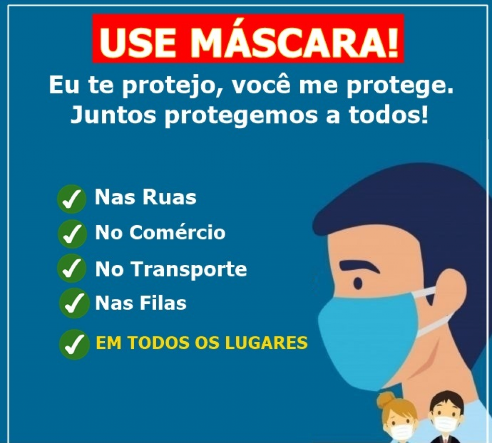

- Lave suas mãos com frequência. Use sabão e água ou álcool em gel
- Mantenha uma distância segura de pessoas que estiverem tossindo ou espirrando
- Use máscara quando for sair de casa
- Mantenha o distanciamento social
- Fique em casa se você se sentir indisposto
- Não toque nos olhos, no nariz ou na boca
As investigações sobre as formas de transmissão do coronavírus ainda estão em andamento, mas a disseminação é de pessoa para pessoa, ou seja, a contaminação por gotículas respiratórias ou contato, está ocorrendo.
Apesar disso, a transmissão dos coronavírus costuma ocorrer pelo ar ou por contato pessoal com secreções contaminadas, como:
- Gotículas de saliva
- Espirro
- Tosse
- Catarro
- Contato pessoal próximo, como toque ou aperto de mão
ATENÇÃO! Use máscara em todos os locais.

Sempre que precisar entrar em contato próximo (menos de um metro) de outras pessoas, deslocar-se ou permanecer em um espaço onde há maior circulação de pessoas, como mercados, farmácias e hospitais.